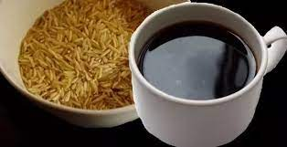

What is Rice Coffee? (aka arba)

Rice Coffee
Rice coffee is literally uncooked rice fried until they go brown or golden colored. Then pour water to drink. It's cheap and will help you survive if you are hungry.
You can use this secret life saving drink to get on with your life for a few weeks until you get your next paycheck. You can add some sugar if you're feeling luxurious enough.
Ingredients
Steps
- Heat the cast iron pan until its hot. Place uncooked rice grains onto the pan and try to spread it out as evenly as possible. Let it stay for a minute or so.
- Start moving the rice around so that it will roast evenly all around.
- Watch until the rice turns into a golden, nut brown color. This is when you must pay extra attention.
- As soon as the rice turns dark brown, remove from heat immediately and transfer into another container.
- If you want a stronger flavor, let it stay in the cast iron pan longer letting the remaining heat roast it slowly—just don’t burn the rice too much as completely black has an unpleasant taste.
- Put a kettle of water to boil.
- As soon as it starts boiling, put in the roasted rice (1 tbsp for every 200 ml of water).
- Let it boil uncovered on medium-low heat for 5 minutes (boiling longer does not result in stronger flavour).
- Pour into a cup or mug (you can strain it if you want).Add milk, sugar, honey or any sweetener to taste (although having it long black is also nice).